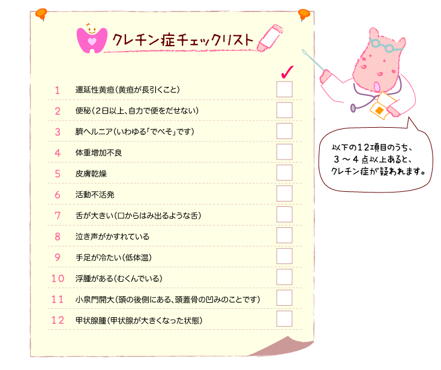

|
Lesson2 : 先天性甲状腺機能低下症（クレチン症）はどんな病気？
2-1 クレチン症とは？
生まれつき、甲状腺で甲状腺ホルモンをつくるはたらきが弱い病気をクレチン症（または先天性甲状腺機能低下症）といいます。正式の病名は「先天性甲状腺機能低下症（英語でcongenital
hypothyroidism）」ですが、病気の原因が甲状腺にあるということが知られる前に「クレチン症」という病名がつけられ、世界各地で昔から一般的に使われていました。そのためもあり、日本ではクレチン症のほうが慣用的に使われているようです。
新生児マススクリーニングが始まるまでは、クレチン症のお子さんのほとんどは、甲状腺機能低下症の症状（発育発達の遅れなど）がはっきりしてから見つけられていたため、発症の頻度は生まれた赤ちゃんのおよそ6000〜7000人に1人くらいだと考えられていました。しかし、スクリーニングが始まると甲状腺機能低下症の程度が軽いお子さんも見つけられるようになり、今では世界各地のスクリーニングで3000〜4000人に１人くらいと報告されています。日本のスクリーニングはより軽度の甲状腺機能低下症も見つけられる仕組みとなっているため、最近では2000人に１人が治療を受けていると考えられています。
もともとのクレチン症は、海藻などに多く含まれているヨード（ヨウ素）という物質が不足して起こる病気で、海に囲まれ海藻をよく食する日本人の場合、ヨードの摂取不足はほとんどありませんが、氷河期に氷河に覆われていた土地ではヨードの含まれていた土壌が海に流されてしまい、今ではヨードがほとんど含まれないため、その土壌で栽培・飼育された動植物中のヨードが不足し、世界各国でヨード不足によるクレチン症が多くみられました。
2-2 クレチン症になると
生後1ヶ月頃のクレチン症の症状をまとめた「クレチン症チェックリスト」があります。
お母さんのおなかにいる頃から大人になるまでの間、甲状腺ホルモンの作用が十分でないと、発育不全（低身長など）や精神発達の遅れ、知能低下などを起こしてしまいます。
現在、日本では新生児マススクリーニングが行われており、生後まもなく発見されるケースがほとんどです。できるだけ早い時期から、不足している甲状腺ホルモンを薬として補うことで、まったく普通の人と変わらない生活を送ることができます。マススクリーニングが始まる前には、重症のクレチン症の場合、生後3ヶ月までに治療を始めることで、知能低下を防ぐことができることが報告されましたが、スクリーニングにより早期発見・早期治療がされるようになった結果、理想的には生後２週間までに十分な量の甲状腺ホルモン薬で治療開始されることが勧められています。